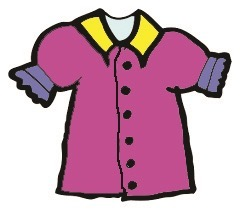
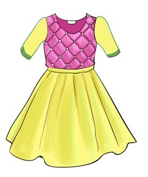
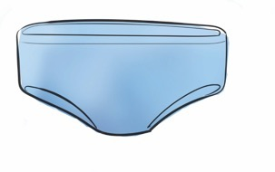
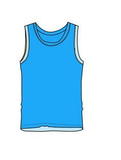
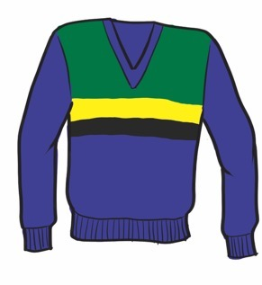
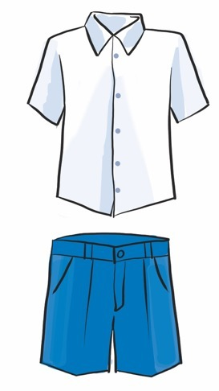
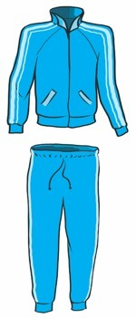

Page 35
5
Picture 5

A purple blouse.
6
Picture 6

A yellow-and-pink dress.
7
Picture 7

Blue underwear.
8
Picture 8

A blue vest.
9
Picture 9

A long-sleeved sweater.
10
Picture 10

A white shirt with blue shorts.
11
Picture 11
A white shirt with a blue skirt.
12
Picture 12

A blue tracksuit.